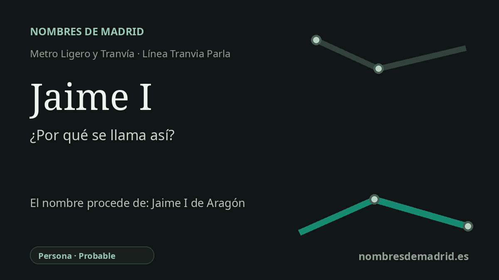

Publicado el · Investigación de Nombres de Madrid · Cómo verificamos cada origen · 9 fuentes consultadas
Respuesta rápida
Jaime I recibe su nombre de la calle Jaime I El Conquistador de Parla. La vía recuerda a Jaime I de Aragón (1208-1276), el rey medieval asociado a las conquistas de Mallorca y Valencia.
La historia del nombre
La parada llamada Jaime I se entiende mejor como un nombre derivado de una calle. El CRTM recoge las plataformas Jaime I Norte y Jaime I Sur en el Tranvía de Parla, mientras que el inventario de bienes del Portal de Transparencia municipal registra la calle Jaime I El Conquistador como vía oficial de esta zona de la ciudad. La parada remite por tanto primero a la calle local y, a través de ella, al monarca medieval Jaime I de Aragón.
Jaime I, conocido como el Conquistador, fue uno de los grandes soberanos de la Corona de Aragón del siglo XIII. La Real Academia de la Historia da como fechas de su vida el 2 de febrero de 1208, en Montpellier, y el 27 de julio de 1276, en Alcira, y lo identifica como rey de Aragón, Mallorca y Valencia, conde de Barcelona y Urgel, y señor de Montpellier. Su sobrenombre refleja la expansión militar que lo convirtió en una figura central de la memoria histórica del Mediterráneo occidental.
Los episodios más conocidos de esa reputación son la conquista de Mallorca, iniciada en 1229, y la conquista de Valencia, cuya rendición en 1238 abrió paso a un nuevo reino dentro de la Corona de Aragón. Su reinado también tuvo importancia institucional: Valencia desarrolló su propio marco jurídico y político, mientras que los fueros aragoneses fueron compilados y promulgados en el contexto regio de 1247. Estos elementos hacen que el nombre de la calle sea algo más que una simple referencia real: evoca expansión, derecho y formación de identidades territoriales medievales.
En Parla, el nombre encaja en un patrón urbano reconocible. El inventario municipal sitúa la calle Jaime I El Conquistador junto a vías como Reyes Católicos, Felipe II, Alfonso XIII, Isabel II, Fernando III el Santo y Carlos V. Ese conjunto sugiere un paisaje de nomenclatura local organizado en torno a monarcas e historia regia, aunque no se ha localizado el acuerdo municipal original que creó la denominación de la calle.
La parada pertenece al moderno Tranvía de Parla, un sistema de metro ligero en superficie desarrollado dentro del Plan de Infraestructuras 2003-2007 de la Comunidad de Madrid. La documentación del CRTM describe el tranvía parleño como una línea circular urbana explotada por Tranvía de Parla S.A.; sus planos incluyen Jaime I Norte y Jaime I Sur. Queda por comprobar el acto exacto de denominación de la parada en expedientes municipales o concesionales, por lo que la etimología es muy sólida, pero conviene tratarla como probable y no como plenamente documentada por una resolución primaria de nomenclatura.